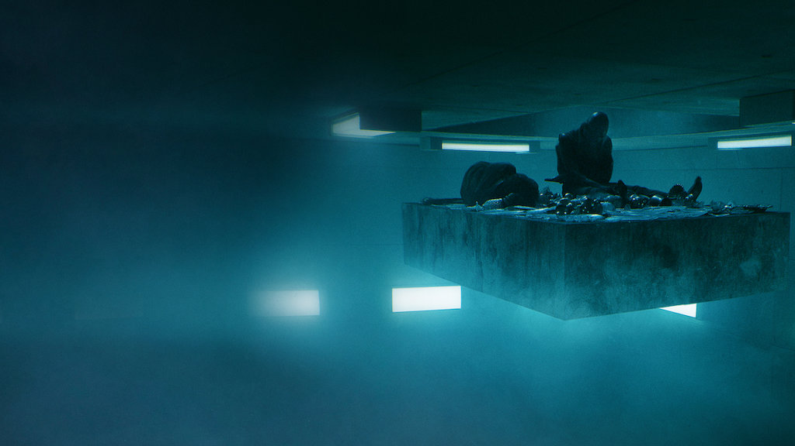

<ion-header>
  <ion-navbar>
    <ion-title>Home</ion-title>
  </ion-navbar>
</ion-header>

<ion-content padding>

  <ion-card>

    <ion-item>
      <ion-avatar item-start>
        <div class="profile-pic">
          
        </div>
      </ion-avatar>
      <h2>{{objetofeed.titulo}}</h2>
      <p>{{objetofeed.data}}</p>
    </ion-item>

    <hr>

    

    <ion-card-content>
      <p>{{objetofeed.descricao}}</p>
    </ion-card-content>

    <ion-row>
      <ion-col>
        <button ion-button icon-start clear small>
          <ion-icon name="thumbs-up"></ion-icon>
          <div>{{objetofeed.likes}}</div>
        </button>
      </ion-col>
      <ion-col>
        <button ion-button icon-start clear small>
          <ion-icon name="text"></ion-icon>
          <div>{{objetofeed.comments}}</div>
        </button>
      </ion-col>
      <ion-col align-self-center text-center>
        <ion-note>
          {{objetofeed.data}}
        </ion-note>
      </ion-col>
    </ion-row>

  </ion-card>

</ion-content>
